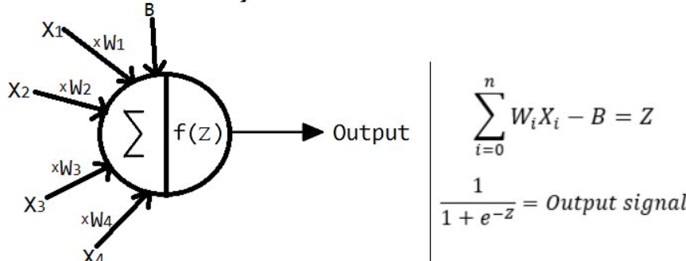
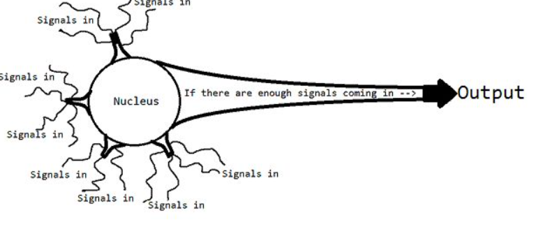
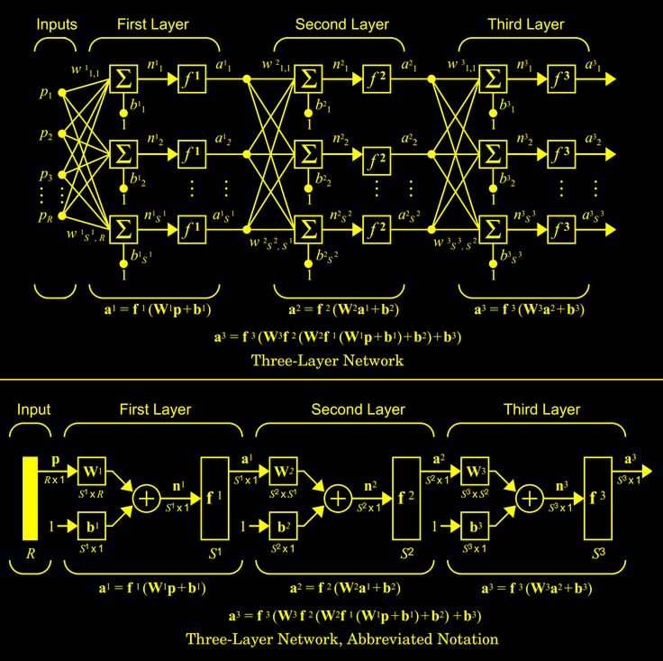

INTELIGENCIA ARTIFICIAL
La inteligencia artificial (IA) es una rama de la informática que crea sistemas capaces de realizar tareas que normalmente requieren inteligencia humana. Estas tareas incluyen aprender, razonar, resolver problemas, interpretar lenguaje, reconocer patrones y tomar decisiones. Se basa en algoritmos y modelos matemáticos que permiten a las máquinas analizar datos, adaptarse y mejorar con el tiempo.
Las redes neuronales artificiales son uno de los fundamentos más importantes de la inteligencia artificial.
Imitan el funcionamiento del cerebro humano mediante estructuras que procesan información de forma jerárquica.
En resumen, las redes neuronales se construyen ajustando conexiones entre capas mediante el aprendizaje de patrones en los datos. Esto permite a la IA resolver problemas complejos como reconocimiento de imágenes, voz o texto.


El contenido de las imagenes representan la estructura programada para completar la construcción eficiente de las inteligencias artificiales, a su vez, todos estos conocimientos estan respaldados por una base matemática y estás explicaciones son un resumen de un campo muy extenso e interesante.